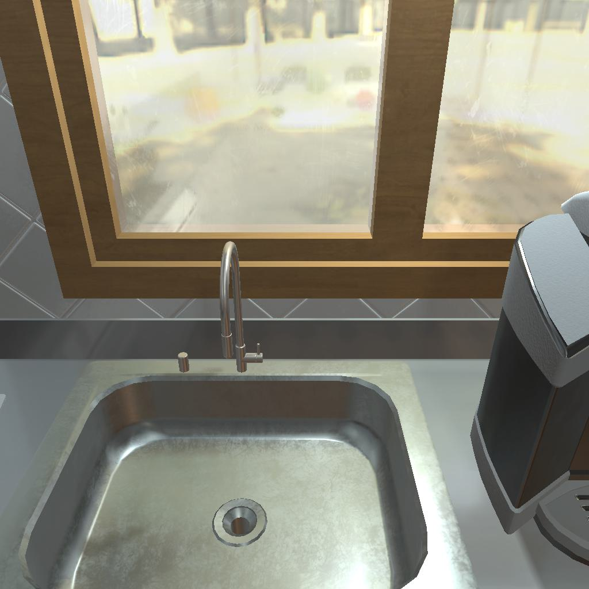

---------------------------------------------------------task: 12---------------------------------------------------------
--------------------------------------------------------------------------------------------------------------------------------------------------------------------
--------------------------------------------------------------------------------------------------------------------------------------------------------------------
Step:--------------------------------------------------------------------------10-------------------------------------------------------------------------------
----------------------------------------
VLM Prompt:
Image1:
Image2:
**Instruction**
1. Analyze the provided images to identify all visible household objects and compare the difference between images (e.h. whether the object is opened or not and taken on hand or not), focusing on those relevant to the task description "put a clean tomato in countertop."
2. Use the analysis of images and the task hint "The agent must find an object of the desired type, pick it up, go to a sink or a basin, clean the object with a sink or basin, and then find the correct location to place it and put it down there. The agent does not need to use soap bottle or faucet to clean the object, and the agent just needs to do action that is "clean the object with the sink or sink basin"." to answer the question: what is the most reasonable action in the choices for the task description "put a clean tomato in countertop"?
3. Decide and write the answer using the template: The answer is: (i): , where i is the real number. If there is no desired object in images, search every place based on **Initial Observation** to find the object. And if no one is exactly correct, choose a similar answer.
**Initial Observation**
You are in the middle of a room. Looking quickly around you, you can see cabinet (1-6), microwave (1), countertop (1-2), coffeemachine (1), toaster (1), sink (1), sinkbasin (1), fridge (1)
**Answer Choices**
(1): go to cabinet 1
(2): go to cabinet 2
(3): go to cabinet 3
(4): go to microwave 1
(5): go to cabinet 4
(6): go to cabinet 5
(7): go to cabinet 6
(8): go to countertop 1
(9): go to coffeemachine 1
(10): go to toaster 1
(11): go to countertop 2
(12): go to sink 1
(13): open fridge 1
(14): close fridge 1
(15): take apple 1 from fridge 1
(16): take potato 1 from fridge 1
(17): examine fridge 1
**Answer**
Let's think step by step by following the instructions.
----------------------------------------
----------------------------------------
Original Response:
First, we analyze the images provided:
Image 1: We can see a sink (1) with a faucet and a sink basin, a window with a view outside, and a part of what appears to be a trash bin. There are no tomatoes or any other objects regarding the task visible on the countertop or in the sink.
Image 2: We can see a fridge (1) that is opened, and inside it, there are two objects that appear to be an apple (1) and a potato (1) on the shelves. There is no tomato visible in the fridge.
Now, according to the task description "put a clean tomato in countertop," the agent must find a tomato, clean it, and place it on the countertop. Since there are no tomatoes visible in the images, we must search other locations based on the Initial Observation.
The most reasonable action to find a tomato would be to search the cabinets or the fridge since these are common places where tomatoes might be stored. Since we can already see inside the fridge and there is no tomato, we can rule out the actions related to the fridge (13, 14, 15, 16, 17). Since we cannot see inside the cabinets from the initial images, we should search there next.
Based on the process of elimination and the task at hand, the next logical step would be to look inside the cabinets to find a tomato. Starting from cabinet 1 and moving onwards would be a systematic approach.
The answer is: (1): go to cabinet 1. If the tomato is not found there, continue to search the remaining cabinets.
----------------------------------------
----------------------------------------
>>> Refine Original VLM Response and Get Pure Action: go to cabinet 1
----------------------------------------
-----------------------------------------------------------------
Running time: 20.740167140960693 seconds
Total Money: 5.522920000000003
-----------------------------------------------------------------
-----------------------------------------------------------------
Text Observation:You arrive at loc 0. The cabinet 1 is closed.
-----------------------------------------------------------------
UNSUCCEED